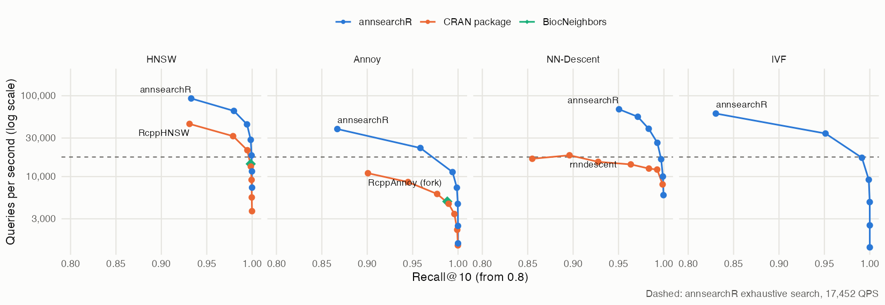
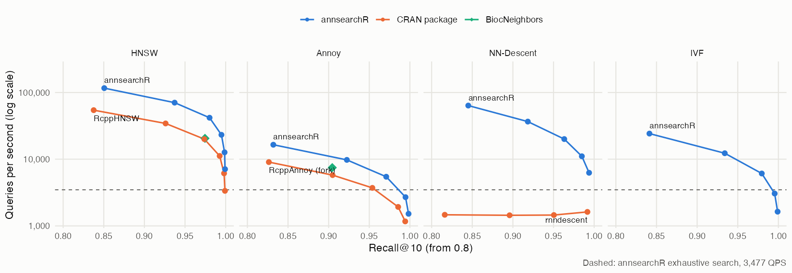
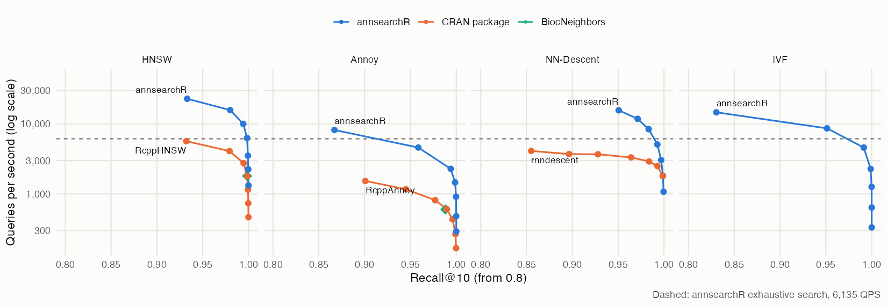

How does annsearchR stack up against the nearest neighbour packages R users actually reach for? We ran the ann-benchmarks protocol on two of its standard datasets and compared every library at equal recall, not at equal settings. Two libraries with the same ef_search can land at different recall, so “faster at the same parameters” says little. Instead each library builds once, its search-time knob is swept, and we read off the best queries per second (QPS) it reaches at recall@10 of 0.90, 0.95 and 0.99.
These are numbers from one machine on one day, frozen here rather than rebuilt with the package. Everything needed to rerun them is in inst/benchmarks/.
Setup
- Machine: Apple M1 Max, 10 cores (8 performance, 2 efficiency), macOS.
- Datasets: Fashion-MNIST, 60,000 x 784 (28 x 28 greyscale product photos), and SIFT-128, 1,000,000 x 128 (local image descriptors). Both use 10,000 held-out queries, k = 10, Euclidean distance and the ground truth that ships with the HDF5 files.
- Matched build parameters: HNSW at M = 16 and ef_construction = 200; Annoy at 50 trees; NN-Descent graphs of degree 30.
-
Swept at query time: HNSW and NN-Descent
ef_searchfrom 10 to 640; Annoysearch_kfrom 500 to 50,000; IVFnprobefrom 2 to 128; rnndescent’sepsilonfrom 0 to 0.3. - Libraries: annsearchR (Rust, via ann-search-rs), RcppHNSW (hnswlib), RcppAnnoy (Spotify’s Annoy), BiocNeighbors (KMKNN, plus hnswlib and Annoy), rnndescent (NN-Descent), FNN and RANN (exact kd-trees).
Each point is a single timed run over all 10,000 queries. Two repeat runs of the Fashion-MNIST sweep agreed within about 5% for most points, but one rnndescent point moved 1.5x between runs, so read small gaps as ties.
Results
Each panel is one algorithm family. Up and to the right is better. The dashed line is annsearchR’s exact brute-force search: an approximate index below it isn’t worth building on that data.
Fashion-MNIST, 10 threads

| Method | Library | Build (s) | QPS @ 0.90 | QPS @ 0.95 | QPS @ 0.99 |
|---|---|---|---|---|---|
| hnsw | annsearchR | 3.5 | 92,593 | 64,935 | 44,248 |
| hnsw | RcppHNSW | 8.4 | 44,843 | 31,646 | 21,186 |
| hnsw | BiocNeighbors | 66.3 | 14,347 | 14,347 | 14,347 |
| nndescent | annsearchR | 3.3 | 68,027 | 68,027 | 26,178 |
| nndescent | rnndescent | 15.8 | 15,221 | 14,144 | 12,210 |
| ivf | annsearchR | 1.4 | 34,130 | 34,130 | 17,094 |
| annoy | annsearchR | 1.7 | 22,573 | 22,573 | 11,364 |
| annoy | RcppAnnoy (fork) | 16.0 | 11,001 | 6,094 | 3,444 |
| annoy | BiocNeighbors | 15.6 | 4,921 | 4,921 | n/a |
| exhaustive | annsearchR | 0.1 | 17,452 | 17,452 | 17,452 |
| kmknn | annsearchR | 1.3 | 2,137 | 2,137 | 2,137 |
| kmknn | BiocNeighbors | 117.2 | 781 | 781 | 781 |
| kd_tree | RANN | - | 33 | 33 | 33 |
| kd_tree | FNN | - | 33 | 33 | 33 |
SIFT-128, 10 threads

| Method | Library | Build (s) | QPS @ 0.90 | QPS @ 0.95 | QPS @ 0.99 |
|---|---|---|---|---|---|
| hnsw | annsearchR | 52.3 | 70,423 | 41,841 | 23,202 |
| hnsw | RcppHNSW | 103.4 | 34,364 | 20,000 | 11,186 |
| hnsw | BiocNeighbors | 659.9 | 20,534 | 20,534 | n/a |
| nndescent | annsearchR | 29.7 | 36,630 | 20,040 | 6,258 |
| nndescent | rnndescent | 207.8 | 1,621 | 1,621 | 1,621 |
| ivf | annsearchR | 2.5 | 12,285 | 6,105 | 3,056 |
| annoy | annsearchR | 10.1 | 9,766 | 5,459 | 2,695 |
| annoy | BiocNeighbors | 93.7 | 7,474 | n/a | n/a |
| annoy | RcppAnnoy (fork) | 101.5 | 5,777 | 3,716 | 1,168 |
| exhaustive | annsearchR | 0.4 | 3,477 | 3,477 | 3,477 |
| kmknn | annsearchR | 2.1 | 491 | 491 | 491 |
| kmknn | BiocNeighbors | 867.0 | 277 | 277 | 277 |
| kd_tree | FNN | - | 6 | 6 | 6 |
| kd_tree | RANN | - | 5 | 5 | 5 |
Fashion-MNIST, 1 thread
The ann-benchmarks convention, and the fair fight for the single-threaded RcppAnnoy, FNN and RANN.

| Method | Library | Build (s) | QPS @ 0.90 | QPS @ 0.95 | QPS @ 0.99 |
|---|---|---|---|---|---|
| hnsw | annsearchR | 17.8 | 22,883 | 15,773 | 10,030 |
| hnsw | RcppHNSW | 67.4 | 5,682 | 4,102 | 2,760 |
| hnsw | BiocNeighbors | 65.8 | 1,806 | 1,806 | 1,806 |
| nndescent | annsearchR | 15.4 | 15,674 | 15,674 | 5,102 |
| nndescent | rnndescent | 82.4 | 3,691 | 3,331 | 2,509 |
| ivf | annsearchR | 1.9 | 8,658 | 8,658 | 4,604 |
| annoy | annsearchR | 5.7 | 4,608 | 4,608 | 2,287 |
| annoy | RcppAnnoy | 15.7 | 1,534 | 817 | 436 |
| annoy | BiocNeighbors | 15.4 | 602 | 602 | n/a |
| exhaustive | annsearchR | 0.1 | 6,135 | 6,135 | 6,135 |
| kmknn | annsearchR | 1.8 | 671 | 671 | 671 |
| kmknn | BiocNeighbors | 117.2 | 100 | 100 | 100 |
| kd_tree | RANN | - | 33 | 33 | 33 |
| kd_tree | FNN | - | 32 | 32 | 32 |
What the numbers say
-
HNSW: annsearchR runs about 2x the queries per second of RcppHNSW at every recall target on both datasets with 10 threads, and builds 2 to 2.4x faster. Recall at the same
ef_searchis within about 0.01 of RcppHNSW’s, so the graphs are of the same quality; the Rust search is just quicker. On one thread the gap widens to 3.6 to 4x: RcppHNSW gains more from extra threads than annsearchR does. - NN-Descent: against rnndescent, 4.5x faster at recall 0.90 on Fashion-MNIST and 23x on SIFT, with builds 5 to 7x faster.
-
Annoy: RcppAnnoy has no threads and no batch query, so the only way to use more cores from R is forking over query chunks with
parallel::mclapply. That’s what the “(fork)” rows are, fork cost included. annsearchR still does 1.5 to 3.7x the QPS and builds about 10x faster. - Exact search: annsearchR’s brute force beats every exact competitor by a mile: about 530x the single-threaded FNN and RANN kd-trees on Fashion-MNIST, and 22x BiocNeighbors’ KMKNN. It also beats its own KMKNN on both datasets: at 784 and 128 dimensions, pruning by k-means clusters doesn’t pay against a blocked GEMM.
-
Builds: BiocNeighbors builds its HNSW, Annoy and KMKNN indices on one thread whatever
num.threadssays, which is where its 11 and 14.5 minute SIFT builds come from.
Caveats
- Brute force isn’t single-core even on “1 thread”. On macOS the exhaustive index runs large batches through Apple Accelerate. At “1 thread” it worked out to roughly 577 GFLOP/s on Fashion-MNIST, far more than one core can do, so read its 1-thread numbers as Accelerate’s. The approximate indices don’t use that path.
-
BiocNeighbors HNSW and Annoy are single points. Its prebuilt index bakes the search parameter in, so sweeping it would mean one rebuild per point. We matched it to the middle of the sweep instead (
ef.search = 80,search_k = 5,000). -
rnndescent spends its time per query, not in the search. Its QPS stays flat across the whole
epsilonsweep while recall climbs from 0.59 to 0.99 on SIFT. A fixed cost per call is about 0.25 s, about 5% of a 10,000-query call; the rest is roughly 0.44 ms per query regardless ofepsilon. Where exactly that goes is inside its C++ code and wasn’t profiled further. - SIFT ground truth: annsearchR’s exhaustive search reaches recall 0.9993 against the file’s own ground truth, not 1.0000. Ties between integer-valued descriptors are the likely reason; nothing in the tables depends on it.
Rerunning
# downloads the HDF5 files once into tools::R_user_dir("annsearchR", "cache")
Rscript inst/benchmarks/bench_ann_benchmarks.R fashion-mnist-784-euclidean 10
Rscript inst/benchmarks/bench_ann_benchmarks.R sift-128-euclidean 10
# plots from inst/benchmarks/results/*_sweep.csv
Rscript inst/benchmarks/plot_results.ROn SIFT the index builds alone add up to about 35 minutes on the machine above, most of it in the single-threaded BiocNeighbors and RcppAnnoy builds.